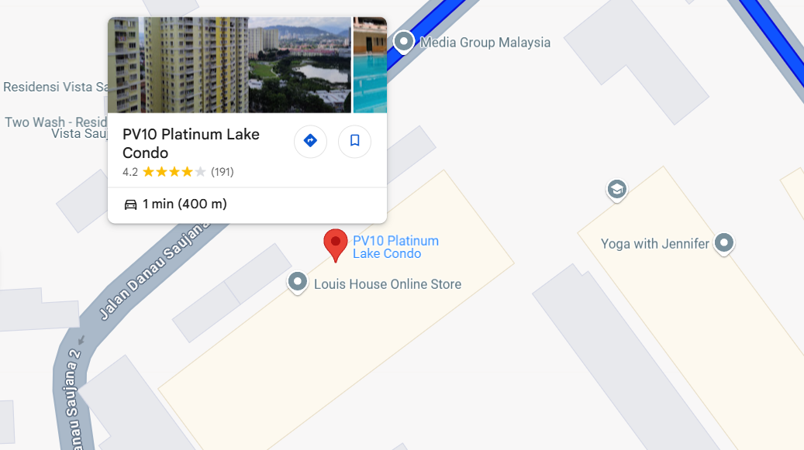

| Name | Age | Date of Birth | Gender | Nationality | Hobby | Personal Motto | Favorite Quote |
|---|---|---|---|---|---|---|---|
| Siti Natasya Binti Zainuddin | 21 Years Old | 8 September 2024 | Female | Malaysia | Watching V-logs | Embrace the journey, not just the destination. | It does not matter how slowly you go as long as you never stop! |
I hail from the vibrant city of Kuala Lumpur, Malaysia which a place renowned for its rich cultural diversity, bustling streets, and iconic landmarks. Nestled in the northern part of the city, I call Setapak Danau Kota is my home. This lively neighborhood seamlessly blends the energy of urban living with a touch of suburban charm, offering convenient access to shopping centers, eateries, and recreational spots. It’s a community that perfectly balances work and leisure, making it an ideal place to live.
